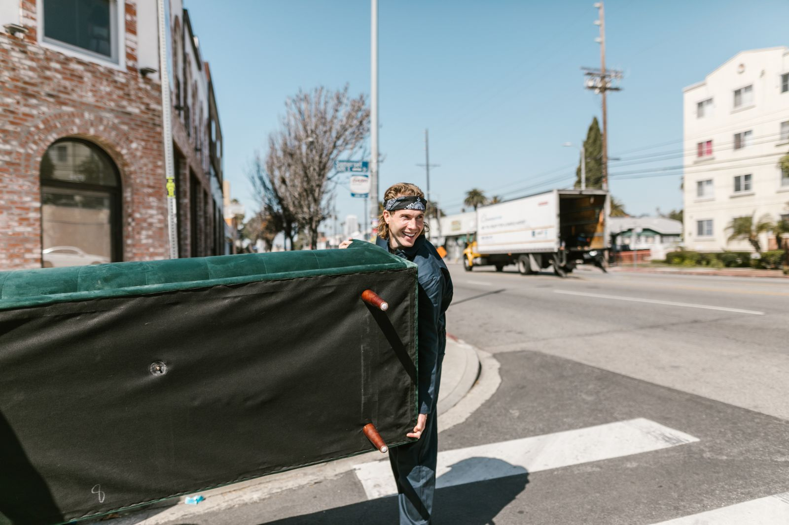

Junk removal & hauling · Bryan, TX 77807
We don’t tidy it up. We haul it out.
Feral Junk Removal and Hauling LLC clears out the furniture, debris and cleanout piles you don’t want anymore — straightforward hauling, no runaround, serving Bryan, TX.

What we haul
If it’s in your way, it’s our job
General categories of junk removal work — confirm your exact job by phone before you book.
Furniture & appliance removal
Couches, mattresses, old appliances — carried out, not left at the curb.
Garage & storage cleanouts
Years of accumulated stuff, cleared in one visit.
Yard & construction debris
Scrap wood, branches, drywall, leftover renovation mess.
Estate & move-out cleanouts
Clearing a full house or unit before a sale, move, or new tenant.
Single-item pickup
Just one heavy thing you can’t move alone? That counts too.
Same-day hauling
Open 24 hours per the business's own listing — call to check same-day availability.
These are general categories of junk removal work — call (979) 286-6611 to confirm Feral can handle your exact job.
About Feral
A brand-new hauling company in Bryan
Feral Junk Removal and Hauling LLC is a newly active junk removal business based at 2006 Theresa Dr in Bryan. It's early days — the business's Google listing is new, with no customer reviews posted yet. We're showing that honestly rather than inventing a track record: what's confirmed is a real address, a real phone number, and a business that's open around the clock.
Business details verified via Feral Junk Removal and Hauling LLC's public Google Business listing, checked 2026-09-05.
On Google
No reviews yet — and we're not going to fake any
Feral Junk Removal and Hauling LLC's Google Business listing is new and doesn’t have any customer reviews posted as of this writing. Rather than inventing testimonials, we're showing that plainly — this is a fresh business with a confirmed real address and phone number, not yet a rating.
Once real reviews come in, they'll appear here exactly as posted — nothing invented, nothing edited.
Verified against Feral Junk Removal and Hauling LLC's public Google Maps listing — checked 2026-09-05.
Hours
Google's listing shows “Open 24 hours,” checked 2026-09-05. Call ahead to line up a pickup time either way.
Call to scheduleGet in touch
Got a pile that needs to disappear?
Call and describe what needs to go — Feral will tell you what it takes to clear it out.
Call (979) 286-6611